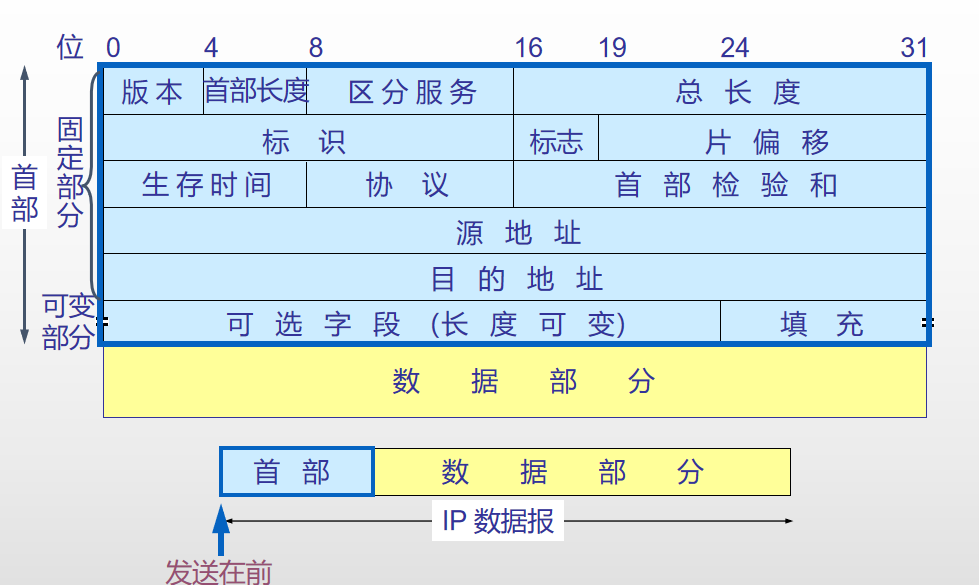
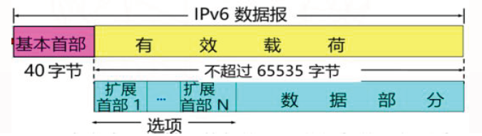
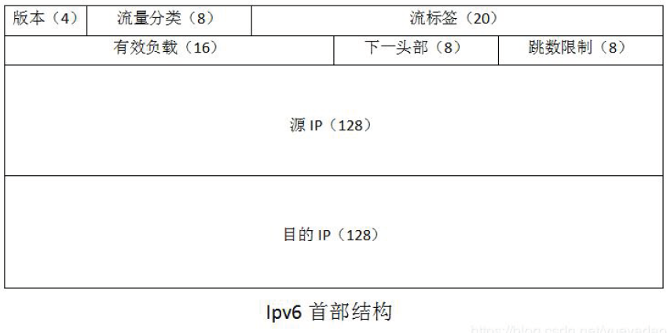
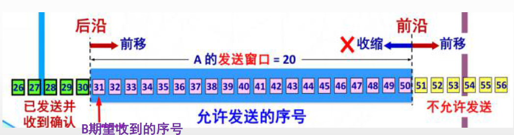
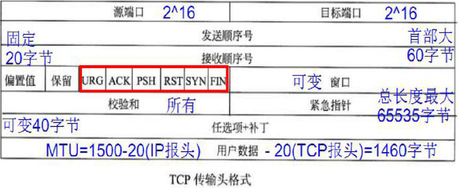
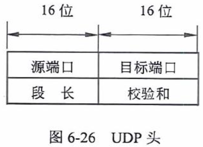

协议
网络层协议
IPV4
地址与子网掩码
32位的二进制数，点分十进制，如 192.168.3.1。
IP地址构成：网络号 + 主机号
- A类地址：1~126，1字节的网络地址和3字节主机地址，二进制以
0开头，1.0.0.0～126.0.0.0 - 私有区域：
10.0.0.0～10.255.255.255 - B类地址：128~191，2个字节的网络地址和2个字节，二进制以
10开头，128.0.0.0～191.255.255.255 - 私有区域：
172.16.0.0～173.31.255.255 - C类地址：192~223，3个字节的网络地址和1字节的主机地址，二进制以
110开头，192.0.0.0～233.255.255.255 - 私有区域：
192.168.0.0～192.168.255.255 - D类地址：224~229，二进制以
1110开头，组播地址； - E类地址：240~255，二进制以
1110开头，用作保留地址；
特殊的地址：
127.X.X.X：本地回环地址0.0.0.0：当前主机。255.255.255.255：当前子网的广播地址。
子网掩码：网络号 + 子网号 + 主机号
- 标准子网掩码：A类，
255.0.0.0；B类，255.255.0.0；C类，255.255.255.0； - 特殊子网掩码：用于网络划分，哪些主机是同一个子网；
131.1.123.23/27：前27位是网络位，后5位是主机位；
数据报文

- 版本：IP协议的版本。这里版本号为4。
- 首部长度：可表示的最大数值是15个单位（4 字节为一个单位），即首部长度最多60字节。
- 区分服务：不同优先级服务质量不同，只有在使用区分服务（DiffServ）时有效。
- 总长度：首部与数据之和的长度，最大长度为2^16-1=65535字节。
- 标识：唯一标识数据报的标识符。
- 标志：中间的一位（DF）0表示分片，1表示 不分片；最低位（MF），0表示最后一个分片，1表示还有分片；最高位保留无用；
- 片偏移：指明该段处于原来数据报中的位置，以 8 个字节为偏移单位。
- 生存时间：记为TTL（Time To Live），指示数据报在网络中可通过的路由器的最大值。防止数据报无限循环传输
- 协议：数据报携带的协议（TCP、UDP、IGMP等）
- 首部检验和：只检验首部，不检验数据。采用16位二进制反码求和算法。
- 可选字段：可记录时间戳 ，通过路径，安全信息等。
- 填充：填充为4的倍数 。
IPV6
地址
128位，16位为一段，共 8 段，如2001:0da8:d001:0001:0000:0000:0000:0001
::表示连续的三个0000:0000:0000；
IPv4/IPv6的过渡技术：
- 双协议栈技术：节点同时支持IPv4/IPv6；
- 隧道技术：在IPv4网络中部署隧道，实现IPv4网络对IPv6的业务承载，如 6to4 隧道、6over4 隧道、ISATAP隧道；
- NAT-PT技术：使用网关设备连接 IPv6 和 IPv4 网络，当 IPv4 和 IPv6 节点互相访问时，NAT-PT 网关实现协议转换和地址映射；
报文


- 版本：IP协议的版本。这里版本号为6。
- 流量分类：通信类型，相当于IPV4服务类型字段。
- 流标签：从源点到终点的一系列数据报，同一个流上的数据报标签相同，保证服务质量。
- 有效负载长度：除基本首部以外的字节数（所有扩展首部都算在有效负载内），最大值64KB
- 下一头部：相当于IPV4的协议字段或可选字段。
- 跳数限制：用于检测路由循环，路由器在转发数据报时对这个字段减1，变成0丢弃该数据报。
IPv6数据报的目的地址可以是以下三种基本类型地址之一∶
- 单播（（unicast）∶传统的点对点通信；
- 多播/组播（multicast）∶一点对多点的通信。
- 任播（anycast）∶这是 IPv6增加的一种类型。任播的目的站是一组计算机，但数据报在交付时只交付其中的一个，通常是距离最近的一个。
IPSec
Internet Protocol Security：是一个协议包，通过对 IP协议的分组进行加密和认证来保护 IP 协议的网络传输协议簇（一些相互关联的协议的集合）。
- 认证头：用于数据完整性认证和数据源认证；
- 封装安全负荷：提供数据保密性和完整性认证，包括防止重放攻击的顺序号；
- Internet密钥交换协议：生成和分发在ESP和AH中使用的密钥，对远程系统进行初始认证；
IPSec 模式：
- 传输模式：IP头没有加密，只是对IP数据进行加密；
- 隧道模式：对原来的IP数据包进行封装和加密，加上新的IP头；
ARP
Address Resolution Protocol：地址解析协议，IP地址到MAC地址
工作流程：
- 主机有ARP缓冲保存ARP列表，保存IP地址到MAC地址对应关系；
- 源主机发送数据，查看ARP列表是否有目的主机IP的MAC地址，有则直接发送；否则，向本网段所有主机发送ARP数据包，包含内容：源主机IP，源主机MAC，目的主机IP；
- 本网络其他主机接受ARP数据包，IP地址不匹配目的主机IP地址，忽略；匹配，则将源主机IP和MAC地址加入ARP缓存（存在则覆盖），然后将自己MAC地址写入ARP响应包中，即告诉源主机目的主机MAC地址；
- 源主机接受ARP响应包后，将目的主机IP和MAC写入ARP缓存，并发送数据；若源主机一直未收到ARP响应，则ARP查询失败；
- 广播发送ARP请求，单播发送ARP响应；
RARP
Reverse Address Resolution Protocol：逆地址解析协议，MAC地址到IP地址
# -b 保持广播 -I 指定网卡 -s 指定源IP地址 -c 发送的数据包的数目
# ifconfig eth0:1 10.90.143.176 netmask 255.255.255.0 up
/sbin/arping -b -I eth0 -s "10.90.143.176" "10.90.143.1" -c 4
传输层协议
TCP
传输控制协议（Transmission Control Protocol，TCP）是一种可靠的、面向连接的字节流服务。

报文

UDP
用户数据报协议（User Datagram Protocol，UDP）是一种不可靠的、无连接的数据报服务。源主机在传送数据前不需要和目标主机建立连接。
报文

对比
- UDP是无连接的，发送数据之前不需要建立连接，因此减少了开销和发送数据之前的时延；
- UDP使用尽最大努力交付，即不保证可靠交付，因此主机不需要维持复杂的连接状态表；
- UDP是面向报文的。UDP对应用层交下来的报文，既不合并，也不拆分，而是保留这些报文的边界。UDP一次交付一个完整的报文；
- UDP没有拥塞控制，因此网络出现的拥塞不会使源主机的发送速率降低。这对某些实时应用是很重要的。很适合多媒体通信的要求;
- UDP支持一对一、一对多、多对一和多对多的交互通信;
- UDP的首部开销小，只有8个字节，比TCP的 20个字节的首部要短。
隧道协议
- 隧道协议：使用一种网络协议（发送协议），将另一个不同的网络协议封装在负载部分，点对点的连接，两端都需要配置隧道协议；
-
如 6to4 隧道、6over4 隧道、ISATAP隧道；
-
VPN隧道协议：VPN Server将private ip发送的包作为负载，发送给另一个VPN server解析；
NAT
NAT网络地址转换（NAT，Network Address Translation）属接入广域网(WAN)技术,是一种将私有(保留)地址转化为外网IP地址的转换技术，它被广泛应用于各种类型Internet接入方式和各种类型的网络中。
NAT不仅完美地解决了lP地址不足的问题，而且还能够有效地避免来自网络外部的攻击，隐藏并保护网络内部的计算机。
- 静态转换：一个内网IP只转换为某个公有IP；
- 动态转换：内部地址可以转换成外部IP集合中的任意一个；
- 端口多路复用(PAT)：多个主机共享一个合法的公网IP实现对Internet的访问，每个内部IP映射到公网上的一个端口；
- 应用程序级网关技术ALG（Appliaction Level Gateway)：传统的NAT技术只对传输层头部进行处理，支持对应用层协议中的地址信息进行转换；
端口多路复用
网络地址端口转换NAPT（Network Address Port Translation）：
- 改变外出数据包的源IP地址和源端口并进行端口转换，即端口地址转换采用端口多路复用的方式；
- 内部网络的所有主机均可共享一个合法外部IP地址实现互联网的访问。
对称NAT（Symmetric NAT）
为每个新的会话开辟一个新的端口。
锥形NAT（Cone NAT）
建立了一对（公网IP，公网端口）和（内网IP，内网端口）二元组的绑定之后，Cone NAT会重用这组绑定用于接下来该应用程序的所有会话（同一内网IP和端口），只要还有一个会话还是激活的。
- 从相同的内部端点（私有地址）到两个不同的外部服务端S1和S2，Cone NAT只为两个会话映射了一个公网端点。
全锥形NAT（Full Cone NAT）
在一个新会话建立了公网/内网端口绑定之后，全锥形NAT接下来会接受对应公网端口的所有数据，无论是来自哪个（公网）终端。
受限锥形NAT（Restricted Cone NAT）
只转发符合某个条件的输入数据包。条件为：外部（源）IP地址匹配内网主机之前发送一个或多个数据包的结点的IP地址。受限NAT通过限制输入数据包为一组“已知的”外部IP地址，有效地精简了防火墙的规则。
端口受限锥形NAT（Port-Restricted Cone NAT）
只当外部数据包的IP地址和端口号都匹配内网主机发送过的地址和端口号时才进行转发。端口受限锥形NAT为内部结点提供了和对称NAT相同等级的保护，以隔离未关联的数据。
问题
- 不能处理嵌入式IP地址或端口，应用协议里的数据包含本地地址，无法被NAT转换；
- 不能从公网访问内部网络服务，需要建立NAT到私有地址端口的映射；
- 有一些应用程序虽然是用A端口发送数据的，但却要用B端口进行接收，结果NAT没有B端口的映射；
- 如果NAT本身又位于另一个NAT之后，则也会出现一些问题；
- 一些P2P应用在NAT后无法进行，NAT设备后的P2P程序在NAT设备上是不会有映射条目。
NAT穿越技术(NAT Traversal)
解决NAT技术的问题：
- 让网络应用程序(如QQ)主动发现自己位于NAT设备之后，主动获得NAT设备的公网IP，并为自己建立端口映射条目；
- NAT穿越技术依赖于UPnP协议的支持，也就是说NAT设备必须支持UPnP，支持NAT穿越技术；
- 网络应用程序一样也需要支持UPnP，支持NAT穿越技术；
对于那种NAT设备位于另一个NAT设备之后的情况，NAT穿越技术也无能为力。